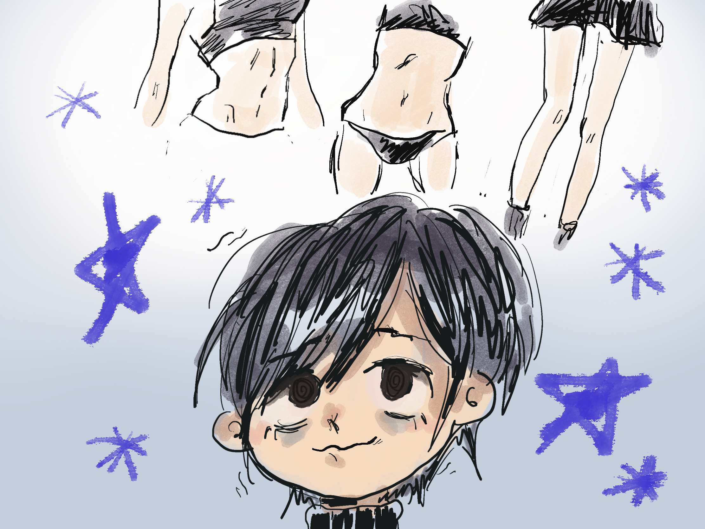

Anorexia is characterized by an intense fear of gaining weight or becoming fat. This fear can persist even when already underweight. They often cannot, or choose not to acknowledge the severity of reaching such low BMI. They also can partake in the restriction of food consumption which can often lead to low body weight. However, not every person with Anorexia is underweight which is a common misconception.
